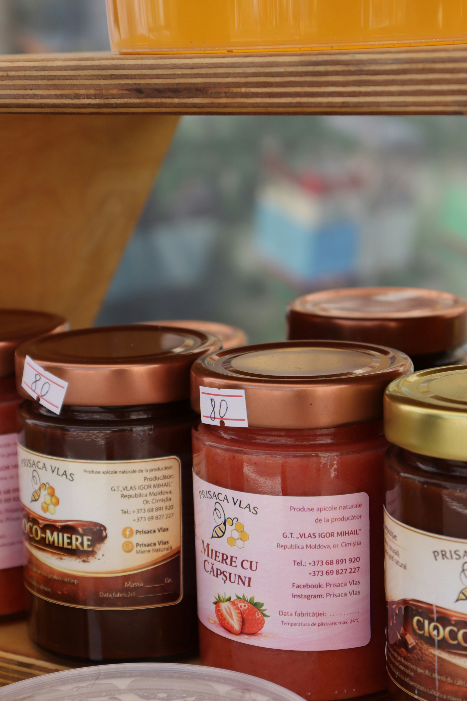
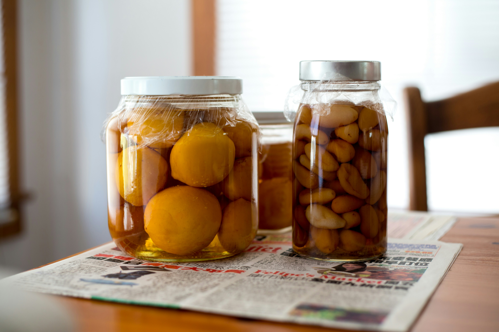
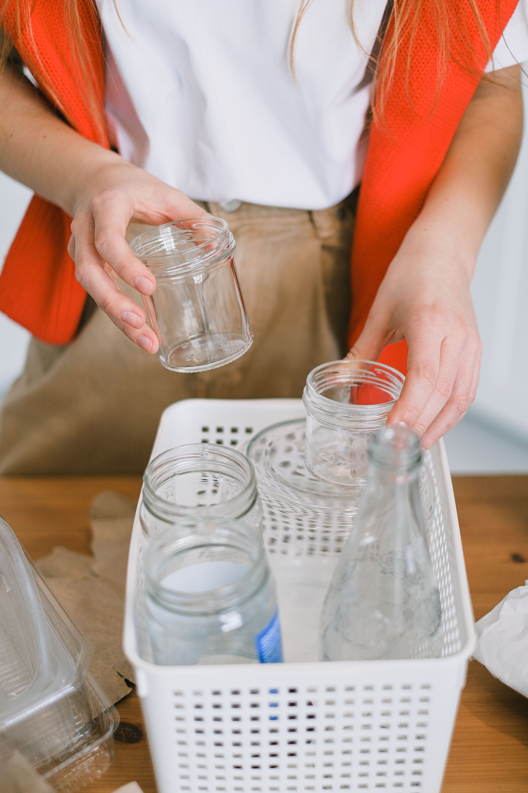
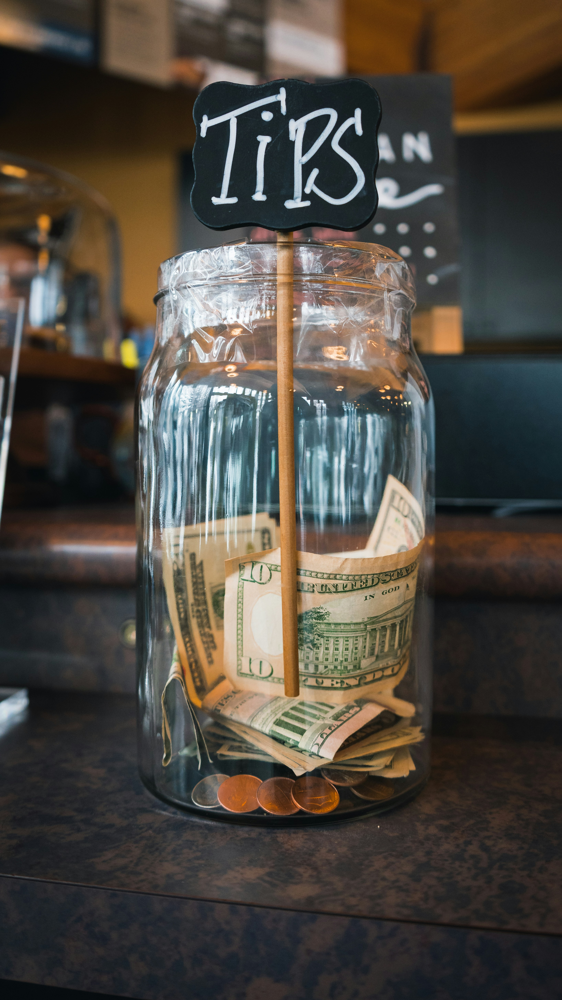
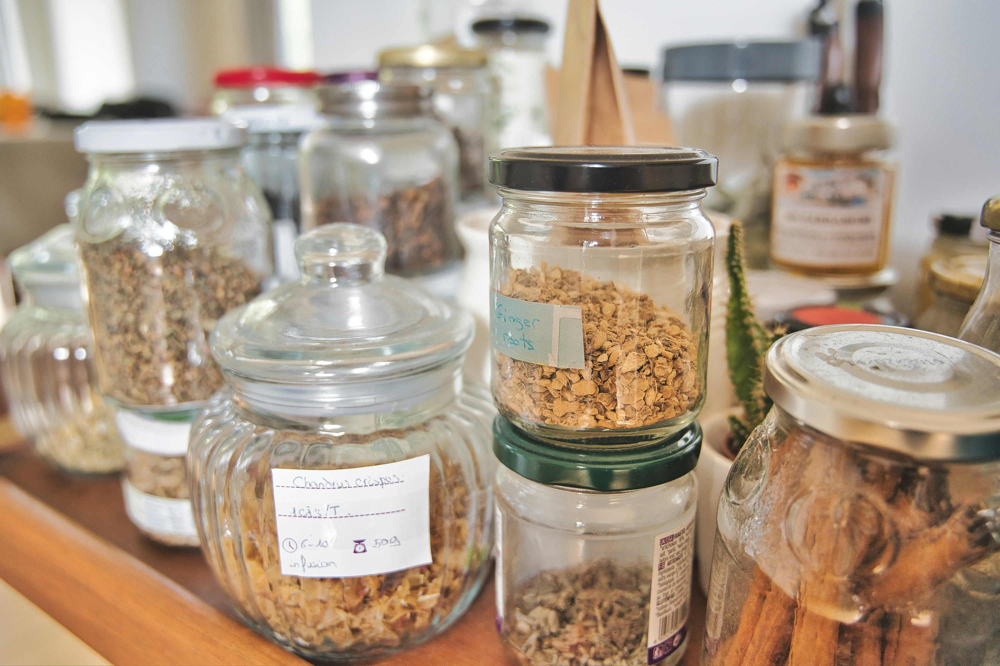
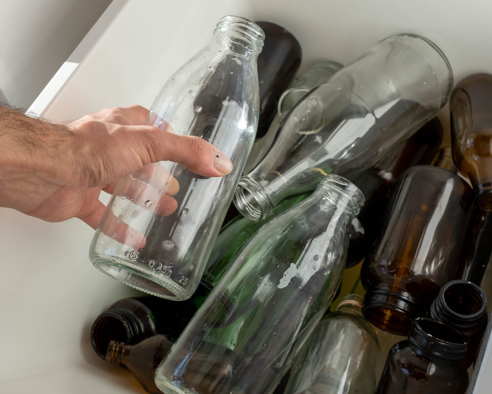
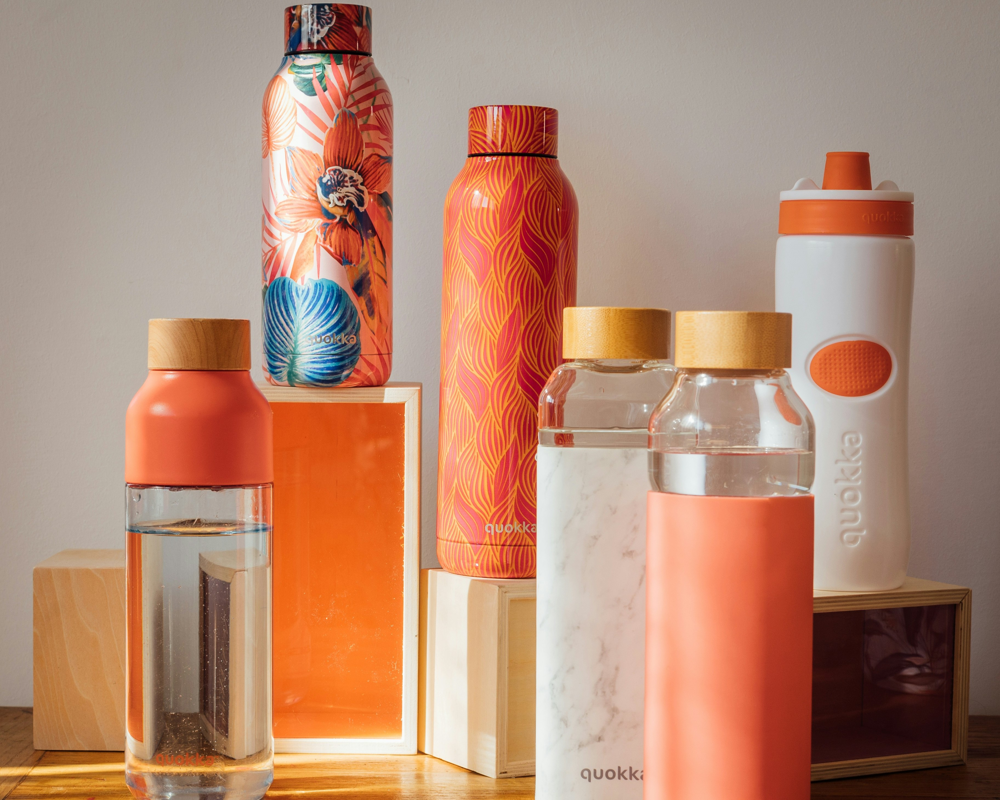
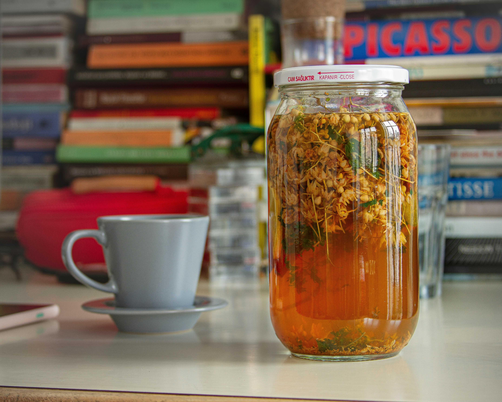

Reducir
Elegir productos con envases reusables ayuda a disminuir la cantidad de residuos que generamos.
Pequeños cambios, menos residuos

Elegir productos con envases reusables ayuda a disminuir la cantidad de residuos que generamos.

Darle nuevos usos a los envases permite prolongar la vida útil de los materiales antes de desecharlos.

Separar correctamente los materiales facilita su recuperación y aprovechamiento.

Incorporar nuevos hábitos puede ayudar a reducir el impacto de nuestros residuos.

Antes de descartarlo, pensa en otra oportunidad
Antes de desechar un envase, podemos pensar si existe otra forma de aprovecharlo. Así extendemos su vida útil y reducimos la cantidad de residuos que generamos.
Conocé más
Cuando un envase ya no puede reutilizarse, separarlo correctamente permite recuperar sus materiales.
Cómo reciclar
Preferir envases duraderos, reutilizables o reciclables también forma parte de un consumo responsable.
Ver alternativas
Optar por materiales reciclables puede disminuir el impacto de nuestros residuos.
Conoce más